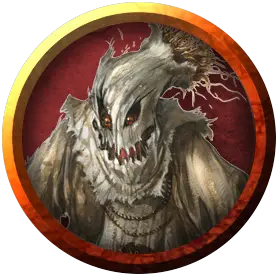

Мистер Иглонитка
Mister Threadneedle
Средний Конструкт, хаотично-злой, именной НИП

Класс Доспеха 11
Хиты 36 (8к8)
Скорость 30 футов
| мод | спас | ||
|---|---|---|---|
| СИЛ | 11 | +0 | +0 |
| ЛОВ | 13 | +1 | +1 |
| ТЕЛ | 11 | +0 | +0 |
| мод | спас | ||
|---|---|---|---|
| ИНТ | 10 | +0 | +0 |
| МДР | 10 | +0 | +0 |
| ХАР | 13 | +1 | +1 |
Уязвимость к урону огонь
Сопротивление урону дробящий, колющий, рубящий от немагических атак
Иммунитет к урону яд
Иммунитет к состояниям паралич, очарование, отравление, истощение, испуг, бессознательность
Чувства тёмное зрение 60 футов, пассивное Восприятие 10
Языки Общий
Опасность 1 (200 опыта)
Бонус мастерства +2
Особенности
Языки. Понимает Общий, но не говорит.
Обманчивая внешность. Пока Мистер Иглонитка остается без движения, оно неотличимо от обычного, неоживленного пугала.
Природа конструкта. Мистеру Иглонитке не нужен воздух, еда, питье и сон.
Действия
Мультиатака. Мистер Иглонитка совершает две атаки когтем.
Коготь. Рукопашная атака оружием: +3 к попаданию, досягаемость 5 футов, одна цель. Попадание: Рубящий урон 6 (2к4 + 1). Если цель — существо, она должна преуспеть в спасброске Мудрости Сл 11, иначе станет испуганной до конца следующего хода пугала.
Ужасающий взор. Мистер Иглонитка нацеливается на одно существо, которое видит в пределах 30 футов от себя. Если цель видит пугало, она должна преуспеть в спасброске Мудрости Сл 11, иначе станет магическим образом напуганной до конца следующего хода пугала. Пока цель испугана, она также парализована.
Описание
Исхудавший джентльмен – Мистер Иглонитка, слуга Сшитых сестёр. При использовании заклинания обнаружение магии [detect magic] или подобного эффекта вокруг него обнаруживается аура Иллюзии. Успешное заклинание рассеивание магии [dispel magic] (Сл 16) раскрывает его истинную форму.
Мистер Иглонитка – это пугало, замаскированное магией, чтобы выглядеть как человек. В кармане он носит глаз карги Сшитых сестёр (см. бестиарий «Карги») и один блестящий чёрный шар (см. зону 81). Мистер Иглонитка понимает Общий, но не может говорить. Он общается, кивая и качая головой, или жестами и мимикой.
Опасаясь прихода авантюристов, карги подготовили этот волшебный пир и поручили Мистеру Иглонитке обслуживать его. Пугало атакует персонажей только в случае самозащиты, или если ему прикажут.